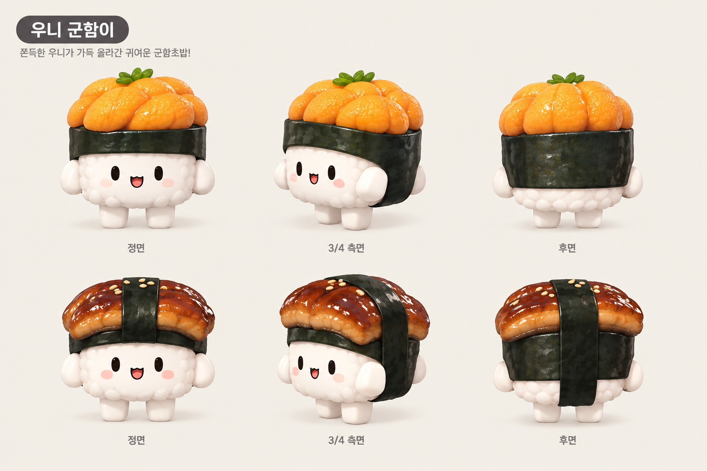

스시런 (Steam) — 1단계 시제품 캐릭터
SushiToyBuilder.cs를 그대로 옮겨 그린 근사 렌더 (Unity 기본 도형 크기·위치·색·광택 동일, 조명은 비슷하게 맞춤). 회색 박스 단계용 임시 모델 — 최종 아트는 3단계 정식 3D 모델.
비교 — 최종 목표 품질 (콘셉트 시트, docs/reference/)

초밥 종류 (봇 팔레트)
쫀득 모션 자세 (JellyMotion 값)